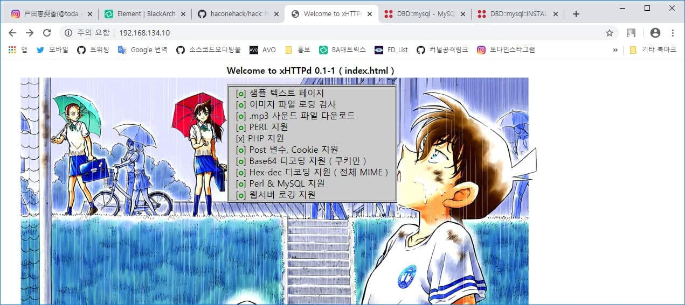

xHTTPd 리눅스 웹 서버 데몬
1. 스크린샷 및 소개

[스크린샷 - 인덱스 데모 화면]
이 오픈소스 프로젝트는 해커와 보안 연구원들을 위한 웹 해킹 보안 개념 숙지를 위한 프로젝트로 학습 목적 및 안전한 보안 웹 서버로 쓰일 수 있도록 개발된
프로젝트입니다. 이 프로젝트는 리눅스 C로 개발되어서, OpenBSD 유닉스에서도 지원하도록 테스트되었습니다. 몇가지 소스 코드 분석을 통해 보안상
안전함이 검증되었고, 주기적인 패치 데이를 통해서 버그 오디팅을 통해서 문제를 해결하고 있습니다.
2. 다운로드
3. 개발자
나는 2000년도에 한국에서 와우해커라는 해커 커뮤니티 팀에서 활동해서 열심히 한 결과 좋은 성과를 이루었던 해커입니다만 최근 프로그래밍에 관심이 많아져서
보안 개발자로 일하려다가, 오픈 소스 프로젝트를 다시 구해서 다루고 있습니다. 코딩을 하면서 기능을 늘리고 큰 프로젝트로 키울 목적입니다.
4. 후원 방법 (donation)
이 프로젝트를 후원하실려면 금전적 후원을 통해서 참여하실 수 있습니다. 메일 주시면 제 계좌번호를 알려드리겠습니다.
5. 연락처 (e-mail)
a.k.a x90 <x90cx90c1@gmail.com>
EOF